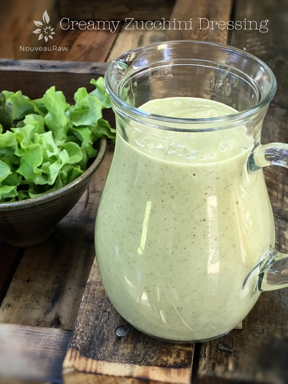

Creamy Zucchini Dressing

~ raw, vegan, gluten-free, nut-free ~
My goal with this dressing was to create one that was nut-free, as well as seed-free. It’s not that I don’t eat nuts or seeds, but I feel that it is very important to rotate the foods that I eat.
So instead of nuts or seeds, I used zucchini. This created a very light dressing in texture. It has just enough creaminess, thanks to the avocado… so it won’t bog you down in calories. This dressing will separate a little as it sits due to the water content in the zucchini. Just shake or blend it back up when using.
And because we are using whole, fresh foods in this dressing, you will want to consume with within 2 days for freshness. There might be a little discoloration with the avocado in the mix… so eat up and enjoy!
So many people stir clear of avocados because it is a fat. But let me say, it’s a healthy fat and our bodies can benefit greatly from the nutrients that they have to offer.
More potassium than bananas!
Potassium is a nutrient that most people don’t get enough of. I often notice that I suffer from leg cramps or I get heart palpitations when my potassium is too low. Took me a while to connect the two but that has been part of my journey in learning to listen to my body.
Potassium’s primary functions in the body including regulating fluid balance and controlling the electrical activity of the heart and other muscles. There are many other wonderful rolls but I will let you keep on researching that if interested. My goal is to share this recipe with you, that not only tastes wonderful but will also benefit your heart and muscles. :) Many blessings, amie sue
Yields 2 3/4 cups
- 2 cups (241 g) diced zucchini, peeled
- 1/2 (97 g) avocado, ripe
- 1 cup water
- 2 Tbsp Balsamic vinegar
- 1 Tbsp raw apple cider vinegar
- 1 Tbsp cold compressed olive oil
- 1 Tbsp Italian seasoning
- 1/4 tsp Himalayan pink salt
- 1/4 tsp ground black pepper
Preparation:
- In a blender, combine the zucchini, avocado, water, vinegars, oil, Italian seasoning, salt, and pepper. Blend until creamy.
- Store in glass container in the fridge for about 2 days.
- Enjoy tossed into a salad, coat zucchini noodles or enjoy as a chilled soup.
© AmieSue.com